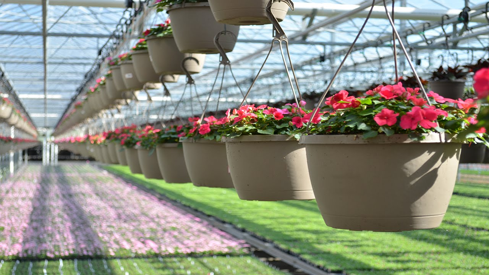
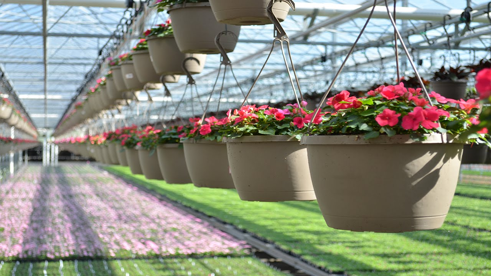

Growing Grounds Farm regularly grows plants on a contract basis. We grow for restoration and mitigation projects as well as for landscape jobs. Let us know what you are looking for and when you need it. We’ll see what we can grow for you. Contact us at 805-543-6071 or growinggrounds@t-mha.org
Lead times depend on the plant. Some plants can be ready in as little as 8 weeks. Other varieties need a year or more to grow to sellable size. If you need site collection, lead time may be up to 2 years for some species.
Growing Grounds can do site collection for some projects. When collecting seed or cuttings on site, there can be narrow windows of opportunity. Seeds are often available only at certain times of year. Other plants can have cuttings harvested only at certain times.